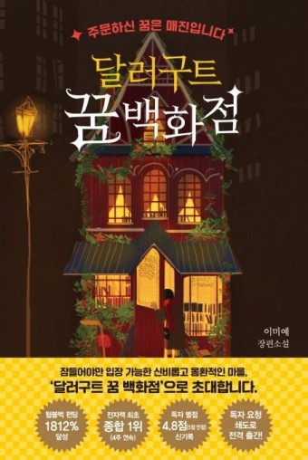

2020년 발간된, 이미예의 판타지 소설로, 출판 즉시 엄청난 인기를 끌었다. 오랜 기간 베스트셀러 자리를 유지하는 중이다. 2021년에는 후속작 달러구트 꿈 백화점2이 출간되었으며, 연말에는 100만부를 돌파했다.
취업 준비생인 페니가 달러구트 꿈 백화점에 취직하며 경험하는 다양하고 재미난 이야기.[2] 잠들어야만 입장할 수 있는 세계를 배경으로 하며, 사건들은 그중에서도 가장 인기 있는 건물인 달러구트 꿈 백화점에서 주로 일어난다. 작중 달러구트 꿈 백화점은 도시에서 가장 멋진 건물, 즉 랜드마크와 청년들의 꿈의 직장으로써 묘사된다.
현실 세계의 사람들은 잠들면 모두 이곳에 오게되며, 자신이 자면서 꿀 꿈을 백화점에서 골라 잠에 빠지게 된다. 꿈에 대가가 필요하진 않지만, 잠에서 깨면서 꿈을 꾸면서 가졌던 감정들을 자연스럽게 백화점에 지불하게 된다. 꿈에 빠지는 장소는 정해져 있지 않기 때문에 꿈세계의 주민들이 아닌 현실 사람들이 늘 카페나 한적한 곳에서 곯아떨어져 있는 모습도 묘사된다.
